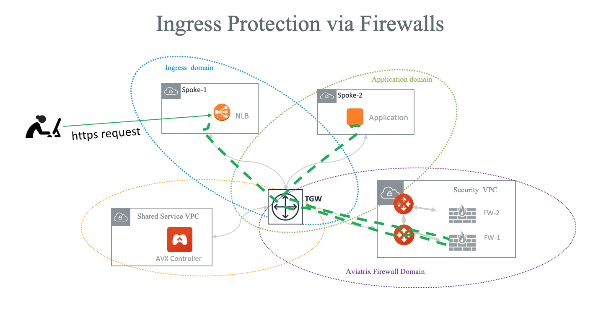

AWS Ingress Firewall Setup Solution
This document illustrates a simple architecture for Ingress traffic inspection firewall that leverages AWS Load Balancers, Aviatrix TGW Orchestrator and Aviatrix Firewall Network. The solution also allows you to view the client IP address.
The deployment is shown as the diagram below.

The key idea is from FireNet point of view, the ingress inspection is simply a VPC-to-VPC traffic inspection. This is accomplished by
Placing an Internet-facing AWS ALB/NLB in a spoke VPC in a separate domain (in the diagram, this domain is called Ingress domain.) from the domains where applications reside (Application domain).
Build a connection policy to connect the Ingress domain with the Application domain.
Connect the Application domain traffic that requires inspection with the Aviatrix Firewall Domain.
In this unified architecture, firewalls can be used for Ingress, Egress, North-South and VPC-to-VPC filtering. The solution does not need AWS ALB/NLB to directly attach to firewall instances which then requires firewall instances to source NAT the incoming traffic from the Internet. Firewall instances can scale out as applications scale for all traffic types.
|
Note
This architecture works for both AWS Network Load Balancer and AWS ALB.. NLB is used for illustration purpose. You can create multiple load balancers in the Ingress VPC. |